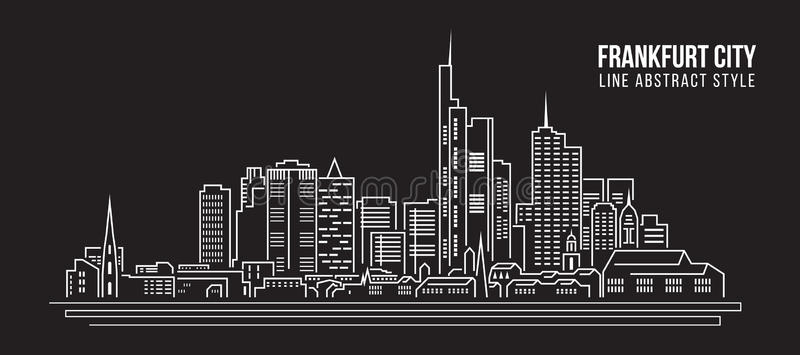
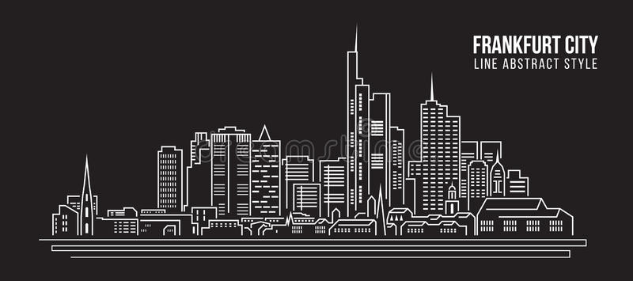

Euskirchen Germany
My first area was Euskirchen. Euskirchen is a town in North Rhine-Westphalia, Germany, it also has a history dating back over 700 years, Parts of the ancient town wall, and three of its defensive towers, are still standing. Tourists are also attracted to Euskirchen due to the proximity of two large cities, Cologne and Bonn, to the northeast, and the hills of the Eifel region to the south. Euskirchen was my first area on my mission. It was a small area that required the use of bikes and public transportation. I had three companions in this area, and served here for about 7 months. This area was also one of the hardest on my mission. I had two companions that I did not get along with and struggled the first half of my mission.
Essen Germany
Essen is the central and second largest city of the Ruhr, the largest urban area in Germany. Its population of 583,393 which, makes it the ninth largest city of Germany, as well as the fourth largest city of the federal state of North Rhine-Westphalia. Essen was the largest City in my mission. It was also the area that I had the most succsess with baptisms. I would find all day everyday by the many shops that surrounded the main street in the city. We would often talk and meet with hundreds people everyday! I was here for 6 months and had some of the best companions in the mission which was a drastic change from my first area.